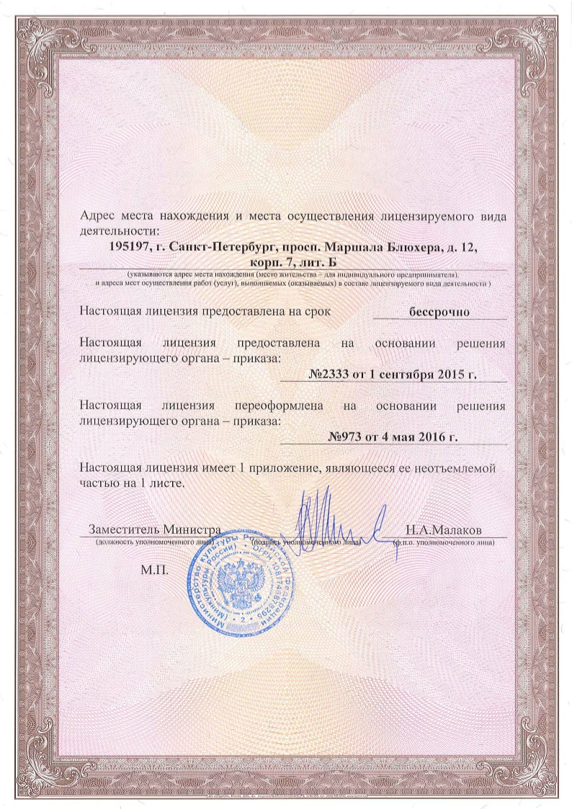

| ПОРТФОЛИО УСЛУГИ МАСТЕРСКАЯ КОНТАКТЫ |
Проектирование зданий, сооружений и комплексовПроектирование зданий, сооружений и комплексов – точка отсчета, которая означает, что новым идеям обязательно быть! Качественный проект обязательно состоит из архитектуры и функциональности будущего здания, а еще включает в себя проработку особенностей участка под застройку, его геодезию, другие показатели. В зависимости от типа здания, его назначения, климатических и других условий создается облик, а также вся инженерная часть. Многие считают, что проектирование – это сугубо технический процесс, в котором работают проверенные схемы, расчеты. Мы докажем, что спроектировать здание – это не только прорисовать его фасады или продумать размещение помещений, это скорее комплексный подход:
Сочетание конструкторско-инженерной и архитектурно-дизайнерской составляющих дает прекрасный результат. Проектирование зданий и сооружений, а также комплексов в нашей мастерской – это возможность привнести в городскую застройку или загородный ландшафт изюминку.
Проектирование градостроительных объектовГрадостроительные объекты – это современная застройка городов и поселков, в список входят как жилые комплексы, так и здания (сооружения) общественного назначения. Также в перечне работ, которые мы готовы предложить своим клиентам, можно увидеть промышленные объекты, зоны отдыха, развлекательные объекты – все, что составляет развитую инфраструктуру для жизни и работы людей. Проектирование градостроительных объектов постоянно движется вперед: наряду со ставшими уже традиционными, мы активно используем новые формы, яркие технологии строительства и материалы. В целом градостроительное проектирование несет в себе не только архитектурную, но и социальную составляющую. Жесткий комплекс требований к подобным проектам ограничивает многие технические моменты, однако он позволяет достичь баланса красоты, безопасности и удобства.
ГенпроектированиеКаждому заказчику строительства, будь то частный дом или огромный жилищный комплекс, важно понимать, с кем он работает. Вы находителсь в поиске генподрядчика? Наша мастерская с готовностью предлагает вам свои услуги в этом сегменте. Проектирование из первых рук в нашем исполнении – это полная отвественность за документацию (сметы и т. д.), выбор субподрядчиков, качество выполняемых работ. Мы предложим:
Договор с нашей компанией в роли генерального подрядчика – это не только заметная экономия времени и средств заказчика строительства, но также и гарантия осуществления всеобъемлющего контроля. Началом такого проектирования считается предпроектный период, а в список документов включены генплан, современные инженерные решения, а еще архитектура и просчет технологических решений по объекту.
Помощь в согласовании проектовПроект готов, а вот согласование его стоит на месте? Как правило, сам процесс согласования считается сложным, поскольку речь идет о необходимости посетить массу государственных служб. Потеря времени, материальный фактор, банальное неумение правильно подойти к вопросу согласования – все это зачастую изнуряет и заставляет искать помощи на стороне. Осуществление согласования проекта специалистами нашей компании – огромный бонус для заказчика строительства, его сбереженные нервные клетки и правильное решение вопроса во всех отношениях. Согласование включает в себя достаточно много пунктов, однако в каждом конкретном случае они разнятся и зависят от объекта, его назначения, типа, этажности, особенностей строительства и т. д. Проведение процедуры по всем правилам подразумевает получение ожидаемого заранее результата в четко очерченные временные сроки (что является важным моментом). Воспользоваться такой помощью – правильное стратегическое решение, позволяющее заказчику строительства продвинуться в своих делах, не потеряв времени и средств.
Сопровождение проектов в процессе строительстваПроцесс строительства априори сложен и многогранен, потому контроль на всех его этапах – важная составляющая для достижения нужного результата. Сопровождение проектов от мастерской «Союз 55» – комплекс задач, которые выполняются как постепенно, так и параллельно одна другой. Как правило, сопровождение включает в себя:
Сопровождение проектов в продолжительном и сложном с технической и других точек зрения строительном процессе выполняется профессионалами, которые не только в теории, но и на практике знают все этапы строительства. Быстрые решения, постоянное участие в процессе, умение вникнуть в суть и вычленить наиболее проблематичные моменты, чтобы впоследствии их исправить – это залог того, что само строительство будет доведено до конца в запланированные сроки. Обращайтесь к нам – и ваше строительство будет под контролем!
Лицензии |
| АРХИТЕКТУРНАЯ МАСТЕРСКАЯ СОЮЗ 55 САНКТ ПЕТЕРБУРГ, ПР. МАРШАЛА БЛЮХЕРА 12, КОМПЛЕКС «АВМ», ОФИС 514. (812) 383 56 55 |